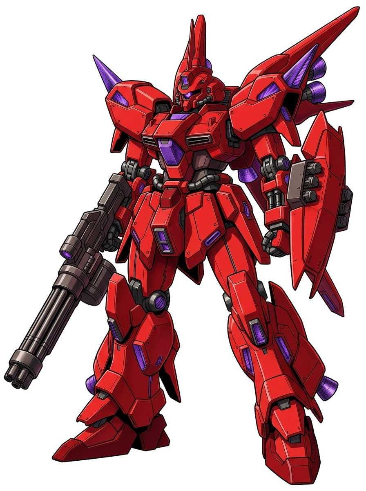
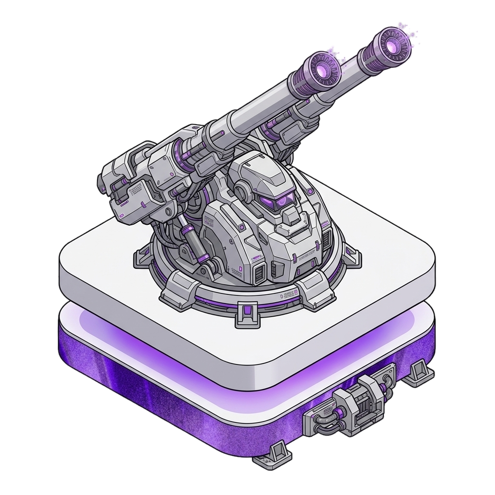

PM-6 基地戦 UIモックアップ
1. 基地ページの「基地戦サマリ」区画 (Base.tsx)
個別戦 (King of the Hill)
設置中
防衛連勝5
獲得戦果120
純粋な機体性能と戦術の競い合い。防衛者の座を守り抜け。
基地防衛 (Base Defense)
被襲撃 2件
防衛成功1
防衛失敗1
被害総額-430pt
未回収の発電所収入を狙う襲撃。現在、保護シールド展開中 (残り 7:42)
2. 襲撃対象の基地ビュー (プロフィール等からの導線)
グラナダ第3基地
Owner: シャア・アズナブル
🏭発電所 Lv4
🗼砲台 Lv3
🏛️博物館 Lv2
この基地を襲撃し、勝利すれば未回収の資金を略奪できます。
※防衛側の砲台(Lv3)による先制迎撃を受けます。
3. 基地戦の戦闘画面 (砲台迎撃フェーズ)

-150


4. 結果画面 (攻撃側勝利・略奪成功)
MISSION ACCOMPLISHED
敵基地の防衛部隊を沈黙させ、施設へのアクセスに成功しました。
+345 pt
敵基地の未回収資金の30%を略奪しました！
[防衛側の事後ログプレビュー]
日時: 2026/07/20 23:15
結果: 防衛失敗 (襲撃者: アムロ・レイ)
被害: 発電所の未回収資金から -345 pt が略奪されました。
状態: 保護シールドが展開されました。(残り 8:00:00)